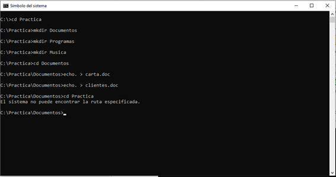
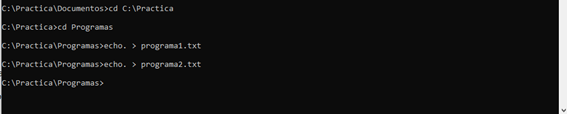
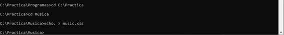
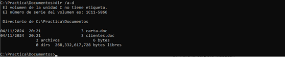
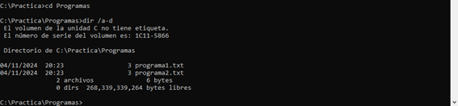
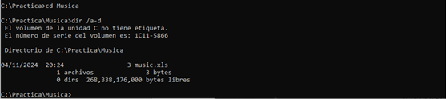
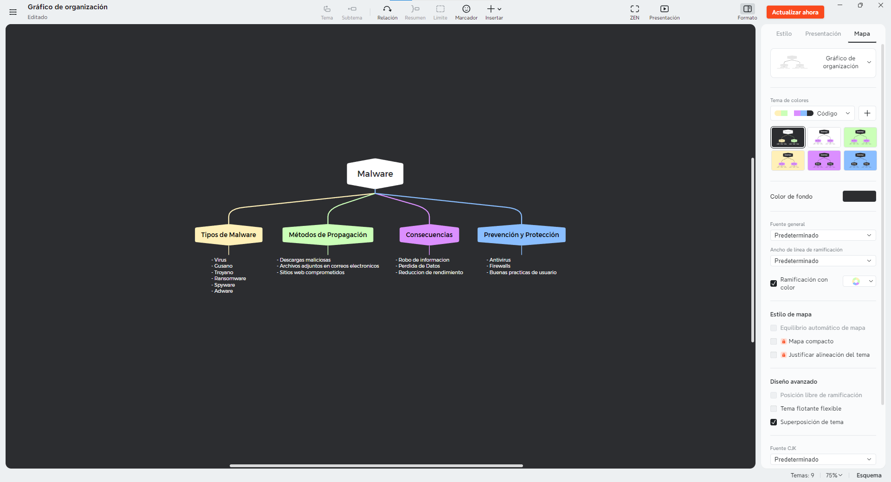

| Problema | Descripción |
|---|---|
| Problema 1 | Utilizar el programa CMD para crear directorios y archivos en Disco D o F, y visualizar la cantidad de archivos por carpeta. |
| Problema 2 | Crear un mapa mental sobre Malware utilizando XMIND, incluyendo capturas de pantalla. |
| Problema 3 | Crear un blog que muestre las capturas de pantalla de los problemas anteriores, utilizando código HTML para la presentación. |
A continuación se muestran las capturas de pantalla de cada problema:
Creación de carpetas y archivos en el sistema de archivos:
Archivos en la carpeta Programas:
Archivo en la carpeta Música:
Carpeta Documentos:
Carpeta Programas:
Carpeta Música:
Mapa Mental creado en XMIND sobre el concepto de Malware:

2do Examen Parcial-DCD-2024-II